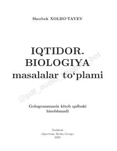

IBBiologiya fanidan DNK va molekulyar masalalar yechish bo'yicha amaliy qo'llanma.
Ushbu qo'llanma biologiya fanidan, jumladan molekulyar biologiya va DNK masalalarini yechish bo'yicha amaliy misollar va test topshiriqlarini o'z ichiga oladi. Kitob abituriyentlar va o'quvchilarga biologik masalalarni tez va to'g'ri ishlash ko'nikmalarini egallashga yordam beradi.